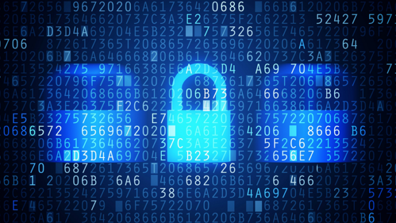
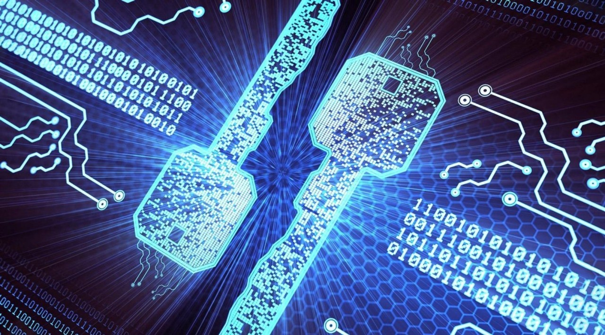

Blog

¡Hola! Estás en mi blog, donde hablaremos sobre temas relacionados a la seguridad de la información. Aquí vamos a explorar las cosas más recientes sobre cómo mantener seguros nuestros datos en un mundo cada vez más digital. Únete a este viaje donde descubriremos cómo las nuevas tecnologías y estrategias nos ayudan a proteger la información y mantenernos fuertes en internet.
¿Listo para sumergirte en el universo de la seguridad de la información?
El Impacto de la Computación Cuántica en la Criptografía y la Seguridad Informática
Publicado el 08/05/2024 | Por Samuel Flores García
La era digital actual se encuentra en constante evolución, marcada significativamente por avances en computación cuántica. Este emergente campo promete revolucionar múltiples sectores, incluyendo la criptografía y la seguridad informática. La computación cuántica utiliza principios de la mecánica cuántica para procesar información de manera exponencialmente más rápida que los computadores clásicos en ciertas tareas. Este artículo investiga cómo la computación cuántica podría alterar los paradigmas de la criptografía, evaluando tanto los potenciales riesgos como las oportunidades que presenta.
Fundamentos de la Computación Cuántica
Antes de explorar su impacto en la criptografía, es esencial comprender los principios básicos de la computación cuántica. A diferencia de los bits clásicos, que operan bajo estados definidos de 0 o 1, los qubits cuánticos pueden existir simultáneamente en múltiples estados gracias al entrelazamiento y la superposición. Este comportamiento permite a las computadoras cuánticas realizar múltiples cálculos a la vez, ofreciendo un potencial de procesamiento masivamente paralelo.
Criptografía Clásica y Seguridad
La criptografía clásica se basa en la premisa de la complejidad computacional. Algoritmos como RSA, ECC (Elliptic Curve Cryptography) y DSA (Digital Signature Algorithm) dependen de la dificultad de problemas matemáticos específicos, como la factorización de números grandes o los logaritmos discretos, que son manejables para las computadoras actuales.
Algoritmos comúnes y sus Bases Matemáticas
- RSA (Rivest-Shamir-Adleman): Basado en la dificultad de factorizar números grandes compuestos por dos primos grandes.
- ECC (Criptografía de Curva Elíptica): Utiliza las propiedades de las curvas elípticas sobre campos finitos, y se basa en la dificultad del problema del logaritmo discreto en estas curvas.
- DSA (Algoritmo de Firma Digital): También basado en el problema del logaritmo discreto, pero aplicado a grupos finitos conocidos.
Desafíos Introducidos a la Criptografía por la Computación Cuántica

- Descomposición de la Criptografía Clásica: Las computadoras cuánticas tienen el potencial de resolver problemas matemáticos que forman la base de muchos algoritmos criptográficos actuales, amenazando incluso a la criptografía simétrica al reducir la efectividad del tamaño de clave.
- Escalado de Computadoras Cuánticas: Aunque no existen aún computadoras cuánticas capaces de desafiar la criptografía clásica a gran escala, los avances tecnológicos sugieren que tal capacidad es inminente, necesitando evaluación y preparación continua.
- Implicaciones para la Seguridad de Datos: La computación cuántica podría permitir nuevos tipos de ataques cuánticos, afectando protocolos de seguridad, sistemas de autenticación y métodos de encriptación actuales.
- Desarrollo de la Criptografía Post-Cuántica: La emergencia de la criptografía post-cuántica busca desarrollar algoritmos que resistan ataques cuánticos, garantizando la seguridad en la futura era cuántica.
- Impacto Socioeconómico Amplio: Los impactos de la computación cuántica en la criptografía extienden más allá de la seguridad de datos, afectando la seguridad nacional, infraestructuras críticas y la confianza en sistemas económicos.
Oportunidades y Avances en Criptografía Cuántica
Aunque la computación cuántica presenta desafíos significativos para la criptografía convencional, también abre caminos hacia métodos de encriptación seguros basados en principios cuánticos, resistentes a ataques tanto cuánticos como clásicos.
Distribución Cuántica de Claves (QKD) y Más
- Distribución Cuántica de Claves (QKD): Utiliza el principio de que la medición afecta el estado cuántico de los fotones, permitiendo detectar intervenciones y asegurando la privacidad de las claves compartidas.
- Iniciativas Comerciales y Académicas: Empresas como ID Quantique y gigantes tecnológicos como IBM y Google están implementando la criptografía cuántica, respaldados por investigaciones académicas avanzadas.
- Desafíos y Proyecciones Futuras: Los retos incluyen la necesidad de infraestructura especial y limitaciones en la distancia de transmisión, aunque se espera que los avances tecnológicos superen estas barreras.
La criptografía cuántica establece un nuevo estándar en seguridad de datos, transformando las estrategias de seguridad para la futura era digital.
Preparación para la Era Post-Cuántica: Criptografía Post-Cuántica y el Futuro de la Seguridad Informática
La inminente llegada de computadoras cuánticas eficaces y poderosas demanda una revisión de las estrategias de seguridad cibernética actuales, especialmente en el ámbito de la criptografía. La llamada era post-cuántica alude a un período futuro en el cual las computadoras cuánticas serán lo suficientemente potentes como para romper muchos de los algoritmos criptográficos utilizados hoy en día. En respuesta a esta amenaza, se ha desarrollado el campo de la criptografía post-cuántica, que busca diseñar sistemas criptográficos capaces de resistir los ataques de computadoras cuánticas.
Innovaciones en la Criptografía Post-Cuántica
- Criptografía basada en retículos: Utiliza problemas matemáticos derivados de estructuras geométricas llamadas retículos, que se han demostrado resistentes a los algoritmos de computación cuántica conocidos hasta la fecha.
- Códigos de corrección de errores cuánticos: La teoría de códigos, crucial en la corrección de errores en la transmisión de datos, también puede contribuir a la seguridad criptográfica en la era cuántica.
- Criptografía basada en isogenias de curvas elípticas: Utiliza propiedades complejas de las curvas elípticas para formular problemas criptográficos que los algoritmos cuánticos actuales no pueden resolver eficientemente.
- Criptografía multivariante: Involucra sistemas de ecuaciones polinomiales que son fácilmente solubles en una dirección pero extremadamente difíciles de invertir sin una clave secreta.
Organizaciones como el National Institute of Standards and Technology (NIST) de los Estados Unidos juegan un papel crucial en la estandarización de los algoritmos de criptografía post-cuántica. Desde 2016, NIST ha estado evaluando propuestas de algoritmos que podrían servir como estándares internacionales para proteger la infraestructura informática contra futuros ataques cuánticos. Este proceso es vital para asegurar la compatibilidad y la seguridad a largo plazo en diversas aplicaciones, desde comunicaciones gubernamentales hasta transacciones financieras globales.
La transición hacia la criptografía post-cuántica no está exenta de desafíos. Los algoritmos post-cuánticos tienden a requerir mayores recursos computacionales y más ancho de banda en comparación con los algoritmos tradicionales. Además, la adopción universal de estos nuevos algoritmos requiere una revisión exhaustiva de las infraestructuras tecnológicas existentes, lo cual implica significativos esfuerzos en términos de tiempo y coste económico.
El desarrollo y la implementación de tecnologías post-cuánticas es una carrera contra el tiempo, considerando la velocidad del progreso en el campo de la computación cuántica. La colaboración entre académicos, la industria y los gobiernos será crucial para crear un ecosistema digital que pueda resistir las amenazas futuras y aprovechar las oportunidades que la nueva era tecnológica ofrecerá.
La computación cuántica plantea desafíos significativos pero también oportunidades innovadoras para la criptografía y la seguridad informática. Mientras que la posibilidad de romper muchos de los sistemas criptográficos actuales insta a una revisión y adaptación urgente, la misma tecnología ofrece nuevas metodologías para salvaguardar datos de manera más efectiva. La transición hacia la criptografía post-cuántica y el aprovechamiento de la criptografía cuántica son pasos críticos para prepararse para un futuro seguro en la era cuántica. La colaboración internacional y el desarrollo continuo de estándares serán esenciales para mitigar los riesgos y maximizar los beneficios de esta revolución tecnológica.
Referencias
- ¿En qué consiste la computación cuántica? - Explicación sobre la computación cuántica - AWS. (s. f.). Amazon Web Services, Inc. https://aws.amazon.com/es/what-is/quantum-computing/
- ¿Qué es quantum computing? | IBM. (s. f.). https://www.ibm.com/mx-es/topics/quantum-computing
- ¿Qué es la criptografía cuántica? | IBM. (s. f.). https://www.ibm.com/mx-es/topics/quantum-cryptography
- Fundación Innovación Bankinter. (2023, 4 octubre). El futuro de la ciberseguridad: Criptografía Post-Cuántica (PQC). https://www.fundacionbankinter.org/noticias/criptografia-post-cuantica/
- Criptografía cuántica | Revista .Seguridad. (s. f.). https://revista.seguridad.unam.mx/numero-18/criptograf%C3%AD-cu%C3%A1ntica
Certificados Electrónicos, Títulos Electrónicos y Firma Electrónica Avanzada en México: Garantizando la Seguridad de la Información
Publicado el 04/03/2024 | Por Samuel Flores García
En la era digital, México ha experimentado una significativa transformación en sus procesos administrativos y legales mediante la implementación de certificados electrónicos, títulos electrónicos y firmas electrónicas avanzadas. Estos elementos son cruciales para garantizar la autenticidad, integridad y confidencialidad de la información en un entorno en constante evolución. Este ensayo explorará estos temas y examinará las tecnologías utilizadas para preservar la seguridad de la información en estos contextos.
Certificados Electrónicos
Los certificados electrónicos son instrumentos digitales que garantizan la identidad de una entidad o persona en línea. En México, se emiten certificados electrónicos para respaldar la autenticación y la firma electrónica. Estos certificados son expedidos por autoridades certificadoras reconocidas por el gobierno, asegurando la confianza en las transacciones digitales. La tecnología clave detrás de los certificados electrónicos es la criptografía asimétrica, que utiliza claves públicas y privadas para garantizar la seguridad en las comunicaciones. Para preservar la seguridad de la información, los certificados electrónicos incorporan tecnologías de cifrado robustas y algoritmos criptográficos seguros. La implementación de estándares como el X.509 asegura que los certificados cumplan con criterios específicos de seguridad y interoperabilidad.
Puntos clave
- Criptografía Asimétrica: Utiliza claves pública y privada para autenticar y asegurar la comunicación.
- Estándar X.509: Define el formato de certificados digitales, estableciendo criterios de seguridad y compatibilidad.
- Autoridades Certificadoras (CA): Entidades confiables que emiten y gestionan los certificados, asegurando su validez.
Títulos Electrónicos
Los títulos electrónicos han cobrado importancia en el ámbito educativo y profesional. En México, la digitalización de títulos ha facilitado la validación rápida y eficiente de credenciales. La tecnología blockchain, una cadena de bloques descentralizada y segura, se ha utilizado para garantizar la inmutabilidad y la autenticidad de los títulos electrónicos. Al registrar la información de manera descentralizada, se minimizan los riesgos de manipulación y falsificación. La seguridad de la información en los títulos electrónicos se refuerza mediante la implementación de firmas digitales y la encriptación de datos sensibles. La incorporación de tecnologías como la huella digital garantiza la unicidad y la integridad de cada título, lo que fortalece su validez y confiabilidad.
Puntos clave
- Blockchain: Tecnología descentralizada que garantiza la integridad y autenticidad de los títulos mediante registros inmutables.
- Firmas Digitales: Se utilizan para validar la autoría y autenticidad del emisor del título, fortaleciendo la seguridad del documento.
- Huella Digital: Asegura la unicidad del título y previene la falsificación mediante la identificación de patrones únicos.
Firma Electrónica Avanzada

La firma electrónica avanzada es esencial para validar la autenticidad de documentos digitales. En México, la Ley de Firma Electrónica Avanzada proporciona el marco legal para su uso, reconociendo su validez jurídica. Las tecnologías subyacentes incluyen algoritmos criptográficos y certificados electrónicos, que garantizan la identidad del firmante y la integridad del documento. Para salvaguardar la seguridad de la información, las firmas electrónicas avanzadas implementan medidas de seguridad como la biometría, que autentica al firmante mediante características físicas únicas. Además, el uso de infraestructuras de clave pública (PKI) asegura la gestión segura de claves y la transmisión de datos cifrados.
Puntos clave
- Ley de Firma Electrónica Avanzada: Marco legal que reconoce la validez jurídica de las firmas electrónicas avanzadas en México.
- Algoritmos Criptográficos: Garantizan la seguridad y autenticidad de la firma mediante procesos matemáticos seguros.
- Infraestructura de Clav Pública (PKI) Gestiona de forma segura las claves públicas y privadas para asegurar la transmisión cifrada de datos.
En conclusión, la implementación de certificados electrónicos, títulos electrónicos y firmas electrónicas avanzadas en México refleja un avance significativo hacia la digitalización segura de procesos y documentos. La adopción de tecnologías como la criptografía, el blockchain y la biometría garantiza la confidencialidad, integridad y autenticidad de la información. En un entorno cada vez más digital, estas herramientas son fundamentales para construir un ecosistema confiable y seguro en línea.
Referencias
- Diario Oficial de la Federación. (2000). Ley de Firma Electrónica Avanzada. Recuperado de: https://www.dof.gob.mx/nota_detalle.php?codigo=5432345&fecha=22/11/2000
- De DocuSign, C. (2023, 23 enero). ¿Qué es la firma electrónica? DocuSign. https://www.docusign.com/es-mx/blog/que-es-la-firma-electronica
- Diario Oficial de la Federación. (2003). Ley de Infraestructura de la Calve Pública. Recuperado de: https://www.dof.gob.mx/nota_detalle.php?codigo=5432345&fecha=22/11/2000
- ¿Qué es la firma electrónica? | CHUBB. (s.f.). https://www.chubb.com/mx-es/mercado-empresarial/articulos/que-es-la-firma-electronica.html
- Firma-E. (s.f.). ¿Qué es un Certificado Electrónico? ¿Qué tipos de Certificado existen? ¿Y para qué sirven? | Firma-e. https://www.firma-e.com/blog/que-es-un-certificado-electronico-que-tipos-de-certificado-existen-y-para-que-sirven/